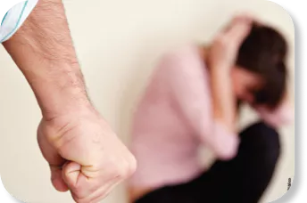

K
L
D
NEWS
 Machismo
Homofobia
Intolerância Religiosa
Desigualdade Social
Machismo
Homofobia
Intolerância Religiosa
Desigualdade Social
Machismo
Machismo é um termo usado para descrever um conceito cultural
tradicional de masculinidade prevalente em algumas culturas
latino-americanas e de Língua Espanhola. É caracterizado por
comportamento forte e assertivo, um senso de honra e ênfase na
coragem física e dominação.
Machismo também pode estar associado ao sexismo, já que muitas
vezes envolve a crença de que os homens são superiores às
mulheres e devem ter mais poder e controle na sociedade. Isso
pode levar a atitudes e comportamentos prejudiciais e opressivos
em relação às mulheres, bem como à perpetuação da desigualdade
de gênero.

Causas, Consequências e Soluções
O machismo é um sistema de crenças, atitudes e comportamentos
que atribui superioridade aos homens em relação às mulheres,
perpetuando desigualdades de gênero. Vou apresentar uma visão
geral sobre esses aspectos, mas é importante ressaltar que a
questão do machismo é multifacetada e existem diferentes
abordagens e perspectivas sobre o assunto.

https://jornalismorio.espm.br/wp-content/uploads/2020/10/portal.jpg

 Socialização de gênero: Desde a infância, meninos e meninas são
socializados de maneira diferenciada, com expectativas e normas
de comportamento baseadas em estereótipos de gênero. Essa
socialização pode reforçar desigualdades e contribuir para a
perpetuação do machismo.
Socialização de gênero: Desde a infância, meninos e meninas são
socializados de maneira diferenciada, com expectativas e normas
de comportamento baseadas em estereótipos de gênero. Essa
socialização pode reforçar desigualdades e contribuir para a
perpetuação do machismo.
Normas culturais e tradicionais: Muitas culturas possuem normas e tradições que reforçam a ideia de superioridade masculina e a subordinação das mulheres. Essas normas podem ser transmitidas ao longo das gerações e dificultar a mudança de mentalidades.
Estruturas de poder desiguais: O machismo está ligado a estruturas de poder desiguais, onde os homens historicamente ocuparam posições de privilégio e controle, enquanto as mulheres foram marginalizadas e excluídas de muitas esferas da sociedade.
Desigualdade de gênero: O machismo contribui para a desigualdade entre homens e mulheres em diversas áreas, como no acesso à educação, ao mercado de trabalho, aos cargos de liderança e nas relações interpessoais. Mulheres frequentemente enfrentam discriminação e são subrepresentadas em posições de poder.
Violência de gênero: O machismo também está relacionado à violência contra as mulheres, incluindo agressões físicas, abuso emocional, assédio sexual e estupro. Essa violência tem graves consequências para a saúde e o bem-estar das mulheres.
Limitações para homens: O machismo também prejudica os homens, pois impõe padrões rígidos de masculinidade, restringindo suas emoções, reforçando a pressão para serem dominantes e encorajando comportamentos agressivos. Isso pode levar a problemas de saúde mental e dificultar a construção de relacionamentos saudáveis.
Educação e conscientização: Promover uma educação inclusiva e igualitária desde a infância é fundamental para desafiar os estereótipos de gênero e desconstruir o machismo. Isso envolve ensinar sobre igualdade, respeito mútuo e valorização da diversidade.
Empoderamento feminino: Incentivar o empoderamento das mulheres é essencial para superar as desigualdades de gênero. Isso pode ser feito através de programas e políticas que promovam o acesso igualitário à educação, ao mercado de trabalho e ao poder de decisão.
Envolvimento dos homens: É importante envolver os homens na luta contra o machismo, incentivando a reflexão sobre seus próprios privilégios e comportamentos. Isso pode ser

K
L
D
NEWS
2023 oficial - 2º informática
SOBRE
CONTATO
REDES SOCIAIS
O jornal é uma ação do Projeto Integrador da Área de
Ciências Humanas e
Sociais Aplicadas. Telefone:
(xx)xxxxx-xxxx
Email:
kimlindodiaN@gmail.com